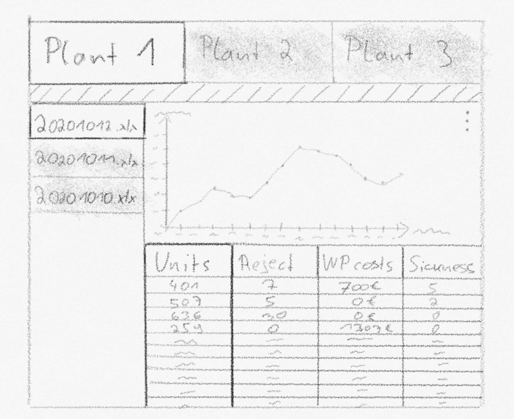
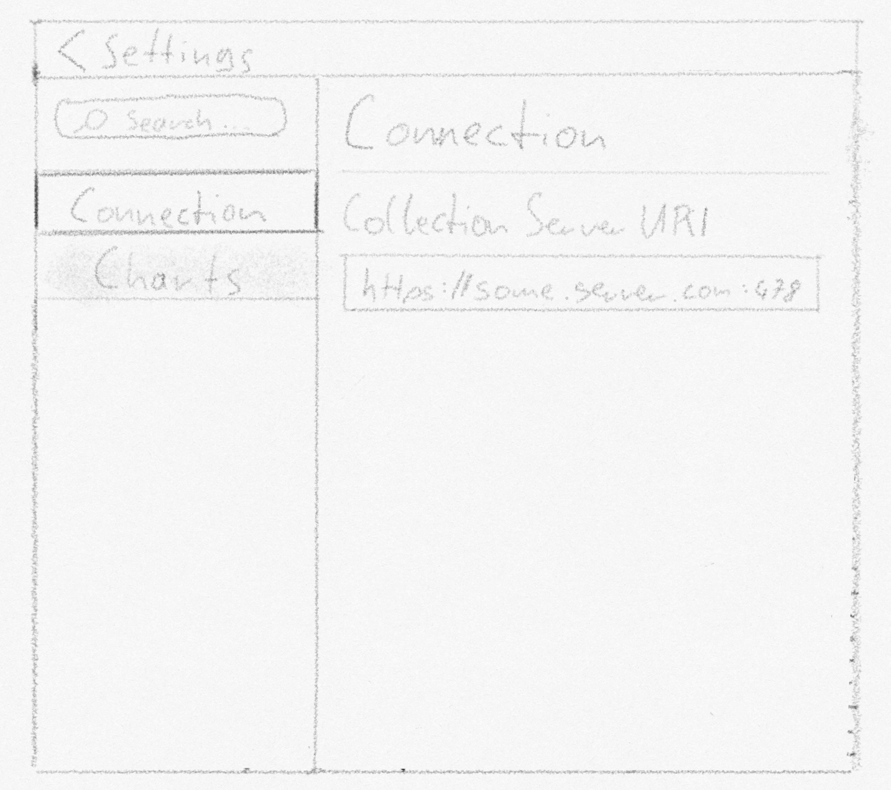
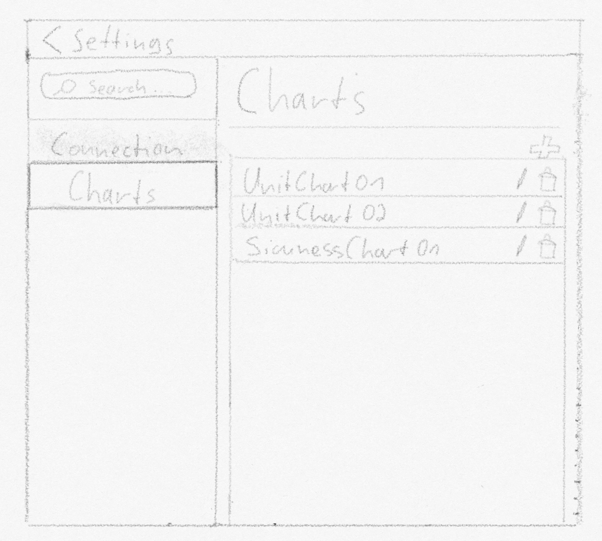

This prototype is inteded to work on a touch device, so the buttons (plant selection, Excel file selection, Excel file columns) are
designed quite a bit larger.
In the top area we have a selection for each plant. When the user clicks on a specific plant, all collected excel files will be loaded
to the excel file selection view on the left.
In the lower right section is the plant data displayed. The columns are selectable. When the user selects a colum, the chart in the middle
of the window will adapt to its selected data type.
Clicking on the gears icon in the upper right corner brings you to the settings view
In the connection view you can configure the adress to the data server
In the chart view you can manage your charts which will be displayed in the main view
You can add new charts, as well as modify and deleted existing ones.
